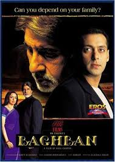
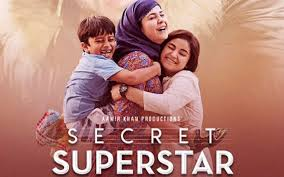

My top 5 movies of all time are

Actors
- Amitabh Bacchan
- Hema Malini
- Salman Khan
Baghban (transl.Gardener) is a 2003 Indian Hindi-language drama film directed by Ravi Chopra, co-written and produced by B. R. Chopra. It tells the story of an elderly couple, Raj (Amitabh Bachchan) and Pooja (Hema Malini), who have been married for 40 years. After Raj retires, they reunite with their four sons (Aman Verma, Samir Soni, Saahil Chadha, and Nasir Khan) to discuss who will support them. None of the sons want to take care of both parents, causing Raj and Pooja to live separately. Baghban was conceived by producer and co-writer B. R. Chopra during his 1960s trip across Europe, when he visited a retirement home and was inspired by the householders' story. It was inspired by a Marathi movie "Tu Tithe Mi" by Smita Talwalkar. In one of the interview it was told that, special screening was set for Mr. Bachchan for the Marathi movie Tu Tithe Mi, later the movie was remade in Hindi as Baghban. Although the screenplay was finished in 1973, Chopra did not begin production for decades because he was busy with other projects. After he revived it, principal photography began in July 2002 in Film City with cinematographer Barun Mukherjee. During post-production, it was edited by Shailendra Doke, Godfrey Gonsalves, and Shashi Mane. Baghban's soundtrack was composed by Aadesh Shrivastava and Uttam Singh, with lyrics by Sameer.
Read more
Actor
- amir Khan
Tare Zameen Par (lit.'Stars on Earth'), also known as Like Stars on Earth in English, is a 2007 Indian Hindi-language psychological drama film produced and directed by Aamir Khan. It stars Khan himself, with Darsheel Safary, Tanay Chheda, Vipin Sharma and Tisca Chopra. It explores the life and imagination of Ishaan (Safary), an artistically gifted 8-year-old boy whose poor academic performance leads his parents to send him to a boarding school, where a new art teacher Nikumbh (Khan) suspects that he is dyslexic and helps him to overcome his reading disorder. Creative director and writer Amole Gupte developed the idea with his wife Deepa Bhatia, who was the film's editor. Shankar Ehsaan Loy composed the score, and Prasoon Joshi wrote the lyrics for many of the songs. Principal photography took place in Mumbai, and in Panchgani's New Era High School, where some of the school's students participated in the filming.
Read More
Actor
- Amir Khan
Secret Superstar is a 2017 Indian Hindi-language musical drama film written and directed by Advait Chandan, and produced by Aamir Khan and Kiran Rao under the studio Aamir Khan Productions.[4][5][6] The film stars Zaira Wasim, Aamir Khan, Meher Vij and Raj Arjun.[7] The film tells the coming-of-age story of a teenage girl who aspires to be a singer, uploading videos on YouTube while disguising her identity with a niqab, and her relationships with her mother, father and mentor.[8] The film deals with social issues including feminism, gender equality and domestic violence.[9] The film received overall positive reviews from critics.[10] Wasim won the National Child Award for Exceptional Achievement.[11] Secret Superstar received ten nominations at the 63rd Filmfare Awards, including Best Film, Best Director for Chandan, Best Actress for Wasim, and Best Supporting Actor for Khan. It won three Filmfare Awards, including Best Actress (Critics) for Wasim, Best Supporting Actress for Vij, and Best Playback Singer (Female) for Meghna Mishra. The film serves as the second collaboration between Wasim and Khan following Dangal (2016).
Read more
Actors
- Salman khan
- Karina Kapoor
Bajrangi Bhaijaan (transl.Brother Bajrangi) is a 2015 Indian Hindi-language comedy-drama film[4] co-written and directed by Kabir Khan, based on an original story by screenwriter V. Vijayendra Prasad, and produced by Salman Khan, Rockline Venkatesh and Kabir Khan. The film stars Salman with debutante Harshaali Malhotra, Kareena Kapoor Khan and Nawazuddin Siddiqui, and tells the story of Pawan Kumar Chaturvedi, a devotee of the Hindu deity Hanuman, who embarks on a journey to take a mute six-year-old Pakistani Muslim girl Shahida, separated in India from her mother, back to her hometown. Made on a budget of ₹75 crore (US$11.69 million)–₹90 crore (US$14.03 million), the principal photography commenced in November 2014. The cinematography was done by Aseem Mishra and was edited by Rameshwar S. Bhagat. Julius Packiam composed the film score while the songs featured in the film were composed by Pritam.
Read more
Actors
- Sushant Singh Rajput
- Disha Patani
M.S. Dhoni: The Untold Story is a 2016 Indian Hindi-language biographical sports drama film directed and co-written by Neeraj Pandey. It is based on the life of former Test, ODI and T20I captain of the Indian national cricket team, Mahendra Singh Dhoni. The film stars the late Sushant Singh Rajput as MS Dhoni, along with Disha Patani, Kiara Advani, and Anupam Kher. The film chronicles the life of Dhoni from a young age through a series of life events. The idea of the biopic was put forward by Dhoni's manager, Arun Pandey, after encountering an incident at an airport after the 2011 Cricket World Cup Final. Development began two years later, with the consent of Dhoni. Neeraj Pandey was later approached to helm the film while he was working on Baby. Pandey recruited a number of people for researching into Dhoni's background and his life events. Dhoni eventually became a consultant on the film.
Read More